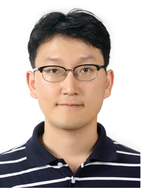

About me
I am an Associate Professor in the Department of Applied Statistics at Chung-Ang University. My research spans deep learning, signal processing, statistical genetics, and biostatistics.
I received my B.S. degree in mathematics from Korea University in 2006 and my M.S. degree in statistics in 2008 under the supervision of Myung-Hoe Huh. I earned my Ph.D. in statistics, with a minor in computer science, from the University of Wisconsin–Madison in 2014. My Ph.D. advisor was Karl Broman.
From 2014 to 2017, I was a postdoctoral associate working with Wei Pan and Daniel Garry at the University of Minnesota–Twin Cities. I worked at Samsung Research from 2017 to 2019 and joined Chung-Ang University in 2019.
I am an applied statistician interested in developing methods for complex, real-world data and making practical research tools broadly available. My research interests include:
- Real-world big data analysis and data-driven services
- Biostatistics and computational methods for biomedical data
- Deep learning for audio and biomedical signals
- Statistical genetics and signal processing
Contact information
Il-Youp Kwak
Associate Professor
Department of Applied Statistics
College of Business & Economics
Chung-Ang University
84, Heukseok-ro, Dongjak-gu
Seoul 06974, Republic of Korea
Phone: +82-2-820-5390
Email: ilyoup.kwak at gmail dot com

Data Competitions
- [4th] Our team ranked 4th overall at the George B. Moody PhysioNet Challenge 2026, Screening for Cognitive Impairment During Sleep Studies. [ Challenge Results ]
- [Winner] Our CAU team (Hyun Jun Kim, , Yu Ra Kim, , Bo Eun Choi, Changwon Lim, ) ranked 1st place at the DCASE 2026 Challenge Task 5: Audio-Dependent Question Answering (ADQA). [ Challenge Results | Tech Report ]
- [3rd] Our CAU_KU team (Sanghyeok Chung, , Donggun Kim, , Jeongbin You, , Sunmook Choi, , Seungsang Oh, ) ranked 3rd place at the ICASSP 2026 challenge on Environmental Sound Deepfake Detection, Track 2. [ Challenge | Paper ]
- [3rd] Our CAU_KU team (, Sunmook Choi, , Sanghyeok Chung, , Seungsang Oh, ) ranked 3rd place at the IJCAI 2023 Challenge on Audio Deepfake Detection, Track 1.2 (fake audio detection track). [ Challenge | Paper ]
- [3rd] Our Unlock_DNA team (Wuming Gong, ) ranked 3rd place at the DREAM Challenge: Predicting gene expression using millions of random promoter sequences. [ Challenge Paper | Proformer Paper ]
- [3rd and 5th] Our CAU_UMN team (, Wuming Gong, and ) ranked 3rd in Heart Murmur Detection and 5th in clinical outcome prediction from phonocardiogram recordings at the George B. Moody PhysioNet Challenges. [ Challenge Results | Conference Paper | Journal Paper ]
- [3rd] Our CAU_KU team (, Sunmook Choi, and SeungSang Oh) ranked 3rd place at the ICASSP 2022 Grand Challenge on Audio Deepfake Detection, Track 1 (Low quality fake audio detection). [ Challenge | Paper ]
- [Winner] Our team ( and Wuming Gong) won both Subchallenges 2 and 3 of the Allen Institute Cell Lineage Reconstruction DREAM Challenge. [ Challenge Paper | DCLEAR Software ]